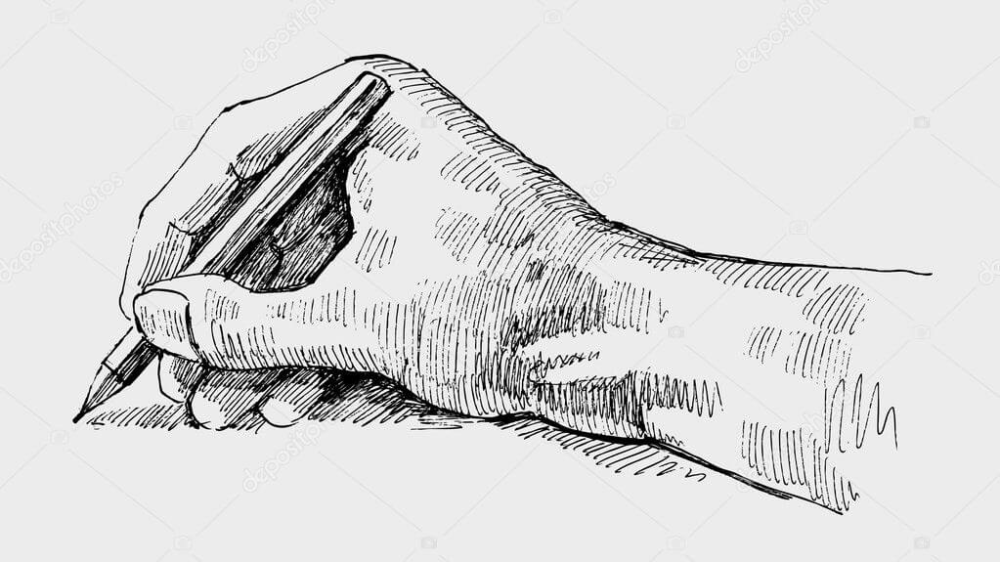
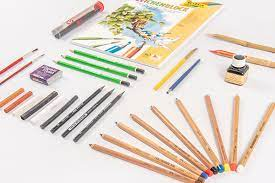

MIJN HOBBYS
MIjn hobby is tekennen
Tekenen kan een zeer goedkope hobby zijn die veel voldoening en waardering kan geven. Veel mensen denken dat er speciale aanleg voor deze hobby nodig is maar iedereen kan leren tekenen. Tekenen is meestal een kwestie van op de juiste manier leren kijken en natuurlijk veel oefening.29/01/2017
 
.jfif)
Vogels zijn er in veel soorten, maten, vormen en ze maken ook allemaal een ander geluid.
Iedereen kan vogels zien vliegen buiten en dus iedereen kan wel een beeld schetsen bij vogels, dus zijn ze ook heel toegankelijk wanneer je ze wilt tekenen.
Als je er over nadenkt is het bijzonder dat we vogels zien vliegen en deze voorlief nemen. Omdat wilde zoogdieren bijna nooit te zien zijn. Denk hierbij aan een haas die zich verstopt of een marterachtige die vaak alleen in de nacht te voorschijn komt.
Daarentegen zie je vogels vaak in je tuin op zoek naar eten of vogels met een prachtig verenkleed die zitten te pronken in de boom waarbij ze een prachtig zangspel laten horen.
Vogels laten zich zien omdat ze kunnen vliegen, omdat bij gevaar zij heel makkelijk het luchtruim kiezen waarbij ze makkelijk afstand kunnen creëren tussen hun vijand.
Let wel goed op! ze zijn toch heel oplettend en als je te dichtbij komt zijn ze weg. Tenzij het vogels zijn die gewend zijn aan mensen zoals stadsduiven, meeuwen en kraaien.
Waarschijnlijk lees je dit omdat je vogels wilt leren tekenen. Op deze pagina probeer ik je de eerste stappen en denkwijze uit te leggen die ik hanteer om bijna alle vogels te kunnen tekenen.
Vogels zijn in de basis allemaal het zelfde, ze hebben namelijk een snavel, veren, vleugels, een paar poten, lijf en een paar scherpe ogen.
Ik ga je eerst wat algemeens uitleggen over hoe een vogel in elkaar zit. Daarna ga ik mijn stappenplan voor vogels laten zien en als volgt wijs ik je nog op wat nuttige informatie.